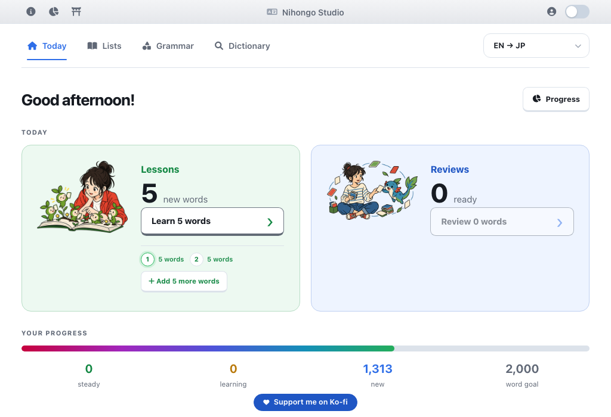
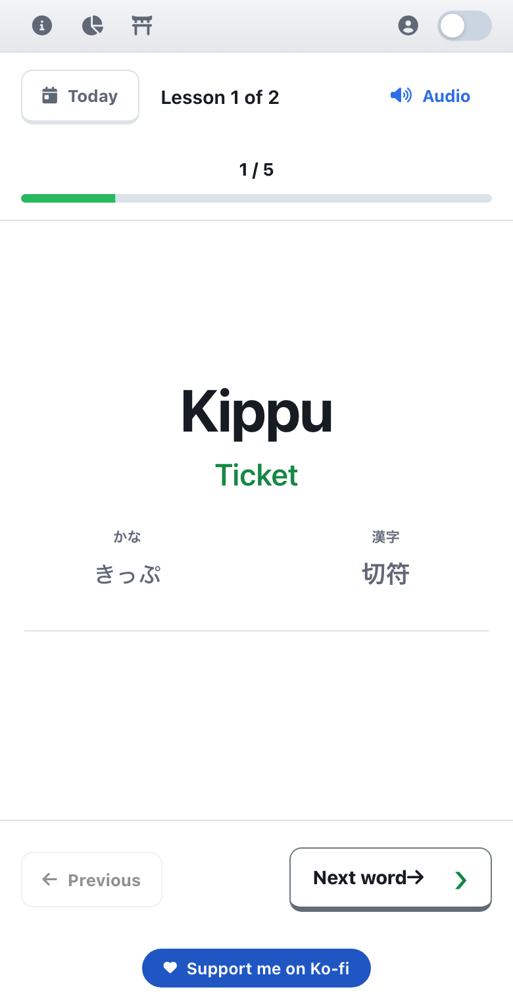

I built this to learn enough Japanese for my trip.
There's a theory that you can understand about 80% of a language with about 20% of the words. I had five months before my trip, so that was the whole plan, and this is what came out of it.
Free. No account. Nothing to install.

The lists are already made
Finding a decent vocabulary list is usually the first job. That part is done. 84 lists and 1,313 words, grouped by theme instead of alphabetised, with the useful words first.
City and Transport. Restaurant & Bar. Travel Essentials. Body Parts. Numbers. Basic Question Words. Eighty more.
Starter Kit holds 74 words: the greetings, pronouns and polite forms most sentences lean on. Travel Essentials and Restaurant & Bar are the two to open before a trip.
These are the lists I used, pre-loaded so you don't have to go looking. With an account you can edit them, split them, or make your own.
Lessons come in fives
A lesson is five words. You see each one first and answer for it afterwards, so nothing is tested before it's been shown. It takes a couple of minutes, which is a much easier habit than an hour once a week.
The first five words of Starter Kit:
- 初めましてHajimemashite Nice to meet you
- いただけますかItadakemasu ka? Can I have a…? / Could I receive…?
- いいねIi ne Nice! / That's good
- 少しSukoshi A little
- お会計お願いしますO kaikei onegaishimasu Can I have the bill please
Four ways to answer the same words: JP → EN, EN → JP, speech, or multiple choice. Kana and kanji sit alongside romaji, so you can read a word from day one. Reviews work the same way as lessons: words come back when they're due, and the ones you got wrong come back first.
I took the daily lesson and the daily reviews from WaniKani, which I got on with. Anki I hated: too much setting up before you learn anything.

Why I built it
I searched the internet for lists, and I had lessons with my sensei, who wrote down most of the language I was missing. I'd point at things and ask what the word for them was. The lists here are built from what I actually needed.
I've been to Japan since, and it worked. I had real conversations with people I'd never met. I'd like to offer the same experience to you.
No account needed
The whole app is open. Your progress saves in your browser, and an account keeps it across devices and lets you edit or build your own lists. You can sign in or make one whenever you want that.
Accounts store your lists and progress and nothing else.
It's free
There are no ads and nothing costs money. One person builds it and pays for it. A donation is welcome and never expected, and it goes straight into keeping it running.
I've been refining this ever since, a bit at a time. If something is missing or awkward, tell me. I'm at petyabouianov.com. We're on this journey together, and right now I'm trying to cram more kanji.
Where to start
Open the studio and work through Starter Kit, or jump straight to Travel Essentials and Restaurant & Bar if a trip is coming up. The library is on the Lists tab, and the dictionary, grammar notes and kanji packs are in the header.